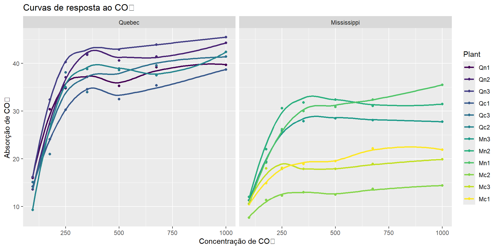

# A tibble: 84 × 5
Plant Type Treatment conc uptake
<ord> <fct> <fct> <dbl> <dbl>
1 Qn1 Quebec nonchilled 95 16
2 Qn1 Quebec nonchilled 175 30.4
3 Qn1 Quebec nonchilled 250 34.8
4 Qn1 Quebec nonchilled 350 37.2
5 Qn1 Quebec nonchilled 500 35.3
6 Qn1 Quebec nonchilled 675 39.2
7 Qn1 Quebec nonchilled 1000 39.7
8 Qn2 Quebec nonchilled 95 13.6
9 Qn2 Quebec nonchilled 175 27.3
10 Qn2 Quebec nonchilled 250 37.1
# ℹ 74 more rows3. Manipulação de Dados com dplyr
Usando o dataset CO2
☕ Assine o Café com R
Fique por dentro das aulas, conteúdos, newsletter!
Que cada gole desperte uma nova ideia.
Que cada script abra uma nova conversa.
Que o Café com R, se torne um ponto de encontro nosso!

Introdução à manipulação de dados no R
Manipulação de dados é a base da análise.
O pacote dplyr permite transformar dados de forma clara e eficiente.
Você aprenderá:
- Fundamentos do dplyr
- Verbos principais e avançados
- Análises com dados agrupados
- Aplicações práticas com o dataset CO2
O dataset CO2: Carregando os dados:
O dataset CO2 (cont.)
Variáveis principais:
Plant: identificação da plantaType: Quebec ou MississippiTreatment: não resfriado ou resfriadoconc: concentração de CO₂uptake: absorção de CO₂
Estrutura dos dados CO2
A estrutura:
uptake ~ conc | PlantSignifica:
uptakevaria conformeconc- A curva é observada individualmente para cada
Plant
Aplicações dos dados CO2
Aplicações:
- Análises fisiológicas
- Curvas de resposta à concentração
- Estudos experimentais
- Comparações entre plantas e tratamentos
Verbos principais do dplyr
A gramática do dplyr usa verbos intuitivos:
filter(): filtra linhasselect(): seleciona colunasarrange(): ordena dadosmutate(): cria/modifica variáveissummarise(): resume dadosgroup_by(): agrupa para operações
filter(): selecionando observações
Plantas do tipo Quebec:
Concentrações acima de 500:
filter(): múltiplas condições
Combinando condições:
Operador OR:
select(): escolhendo colunas
Selecionando colunas específicas:
Removendo colunas:
select(): seleção avançada
Seleção por padrão:
Outros helpers:
ends_with()contains()where(is.numeric)
arrange(): ordenando linhas
Ordenação crescente:
Ordenação decrescente:
arrange(): múltiplos critérios
Ordenando por múltiplas colunas:
Primeiro ordena por Type, depois por uptake decrescente.
mutate(): criando novas variáveis
Variável normalizada:
Classificação condicional:
mutate(): transformações múltiplas
Várias colunas de uma vez:
group_by() + summarise()
Estatísticas por grupo:
group_by() + summarise() (cont.)
Múltiplos agrupamentos:
CO2 |>
group_by(Type, Treatment) |>
summarise(
media = mean(uptake),
max = max(uptake),
.groups = "drop")Sempre use .groups = "drop" para remover agrupamentos.
Workflow: combinação de verbos
Pipeline completo:
Workflow: o pipe |>
O pipe |> permite encadear operações de forma legível.
Lê-se como: “e então…”
Estatísticas descritivas por planta
Estatísticas descritivas (cont.)
Adicionando mais medidas:
mutate() com agrupamento
Centralização intra-grupo:
mutate() com agrupamento (cont.)
Uso típico:
- Centralização de variáveis
- Análises intra-grupo
- Cálculos relativos
- Preparação para modelos estatísticos
Diferença: mutate() mantém todas as linhas, summarise() reduz para uma linha por grupo.
Funções auxiliares: first(), last(), n()
Funções auxiliares: quando usar
Útil para:
- Contar observações (
n()) - Identificar valores iniciais/finais (
first(),last()) - Verificar níveis únicos (
n_distinct()) - Exploração inicial dos dados
slice_family: slice_max e slice_min
Maiores valores:
Menores valores:
slice_family: slice_head e slice_tail
Primeiras linhas:
Últimas linhas:
case_when(): múltiplas condições
case_when(): vantagens
Vantagens:
- Mais legível que múltiplos
if_else() - Suporta muitas condições
- Sintaxe clara e concisa
- Ordem importa: primeira condição verdadeira vence
Dica: use TRUE ~ para o caso padrão (equivalente ao “else”).
across(): operações em múltiplas colunas
Aplicar funções a várias colunas:
across(): com seletores
Com agrupamento e seletores:
Aplica mean() em todas as colunas numéricas.
rowwise(): cálculos linha a linha
rowwise(): quando usar
Quando usar:
- Operações que precisam de valores da mesma linha
- Cálculos que não são vetorizados
- Funções que operam em conjuntos de valores
Atenção: pode ser lento com grandes datasets.
Joins: complementando dados
Criando tabela auxiliar:
Joins: tipos principais
Tipos de join:
left_join(): mantém todas as linhas da esquerdainner_join(): apenas correspondênciasfull_join(): todas as linhas de ambasright_join(): mantém todas as linhas da direita
Use quando: precisar combinar dados de diferentes fontes.
lag() e lead(): valores anteriores/posteriores
Derivadas de resposta
CO2 |>
group_by(Plant) |>
arrange(conc) |>
mutate(
delta_uptake = uptake - lag(uptake),
delta_conc = conc - lag(conc),
taxa = delta_uptake / delta_conc)Aplicações: calcular mudanças, taxas de crescimento, derivadas discretas.
Ranking: row_number() e dense_rank()
Ranking: diferenças
Diferenças:
row_number(): números únicos consecutivos (1, 2, 3…)dense_rank(): empates recebem mesmo rank (1, 1, 2, 3…)min_rank(): empates pulam posições (1, 1, 3, 4…)percent_rank(): posição como percentual (0-1)
Detectando outliers com z-score
Z-score: interpretação
Interpretação:
- |z| > 2: possível outlier (≈5% dos dados)
- |z| > 3: outlier provável (≈0.3% dos dados)
Observação: assume distribuição normal dos dados.
Estatísticas por quantis
Estatísticas por quantis (cont.)
Adicionando intervalo interquartil:
CO2 |>
group_by(Type) |>
summarise(
q25 = quantile(uptake, 0.25),
q75 = quantile(uptake, 0.75),
iqr = IQR(uptake))Vantagem: medidas robustas, menos sensíveis a outliers.
Funções personalizadas
Criando função própria:
Funções personalizadas: vantagens
Vantagens:
- Reutilização de código
- Cálculos complexos simplificados
- Código mais legível e organizado
- Facilita manutenção
Dica: crie funções para cálculos repetidos.
Agregações multifatoriais
Agregações multifatoriais (cont.)
Adicionando erro padrão:
CO2 |>
group_by(Type, Treatment) |>
summarise(
n = n(),
media = mean(uptake),
se = sd(uptake) / sqrt(n()),
.groups = "drop")Análise completa: tamanho amostral, tendência central, dispersão, erro padrão.
Visualização: médias por grupo
Visualização: adicionando labels
Curvas de resposta: visualização
Curvas de resposta: com facetas
Modelos por grupo: nest() + map()
Modelos por grupo: ajustando
modelos <- CO2 |>
group_by(Plant) |>
nest() |>
mutate(
ajuste = map(data, ~ lm(uptake ~ conc, data = .x)),
resultados = map(ajuste, tidy)) |>
unnest(resultados)Programação funcional aplicada à análise de dados.
Dicas finais: boas práticas
Boas práticas:
- Use pipes
|>para clareza - Nomeie objetos intermediários quando necessário
- Sempre use
.groups = "drop"em summarise() - Verifique seus dados com
glimpse()esummary()
Dicas finais: recursos de ajuda
Recursos:
- Use
?dplyr::filterpara ajuda - Cheat sheets do RStudio
- Comunidade R Brasil
- Stack Overflow em português
Documentação oficial: https://dplyr.tidyverse.org
Considerações finais
Você aprendeu:
- Verbos fundamentais do dplyr
- Manipulação com dados agrupados
- Técnicas avançadas de transformação
- Análise completa com dataset CO2
- Integração com visualização
Próximos passos
Próximos passos:
- Praticar com seus próprios dados
- Explorar outros pacotes do tidyverse
- Aprofundar em tidyr (pivot, separate, unite)
- Aprender purrr para programação funcional
- Estudar ggplot2 para visualizações avançadas
Referências
- Wickham, H. & Grolemund, G. R for Data Science
- Documentação do tidyverse: https://dplyr.tidyverse.org
- Dataset CO2:
?datasets::CO2 - Wickham, H. Advanced R
Muito Obrigada!
É OPEN, USE, COMPARTILHE!

☕ Assine o Café com R
Fique por dentro das aulas, conteúdos, newsletter!
Que cada gole desperte uma nova ideia.
Que cada script abra uma nova conversa.
Que o Café com R, se torne um ponto de encontro nosso!

Jennifer Lopes • Café com R